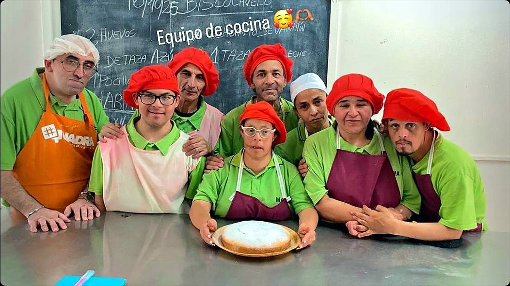
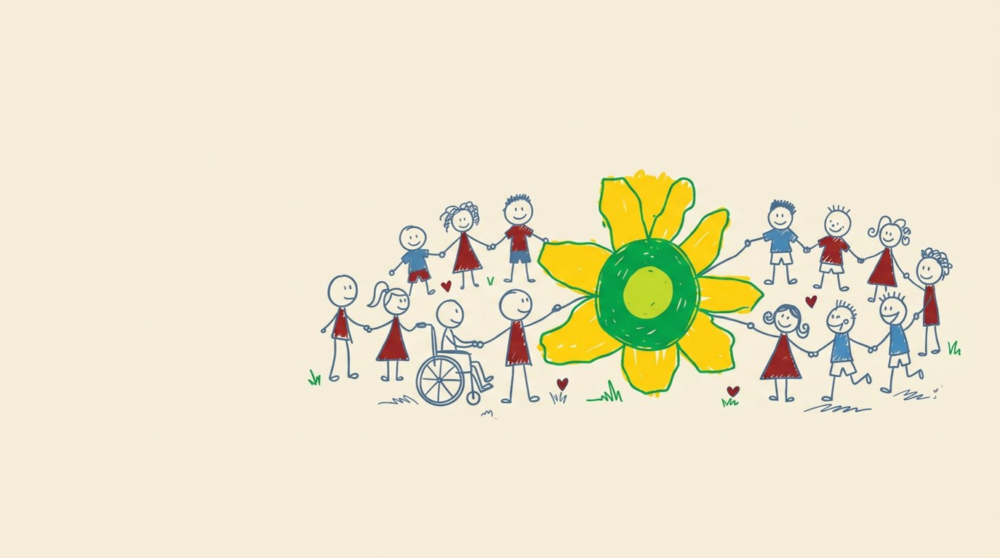
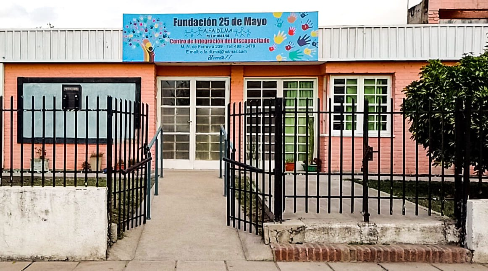
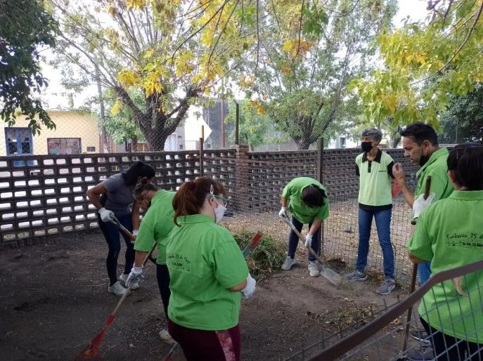
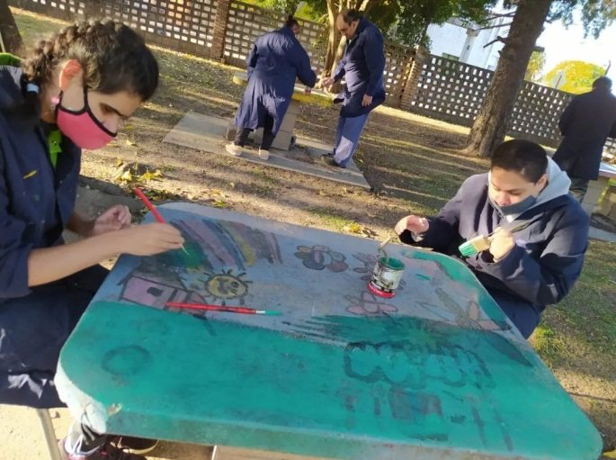
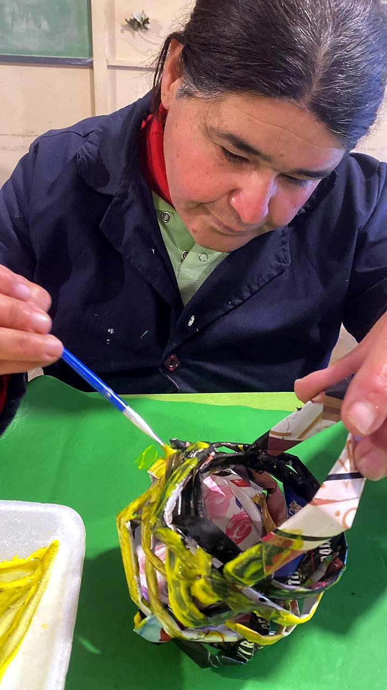
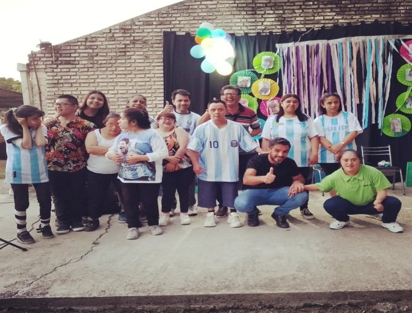
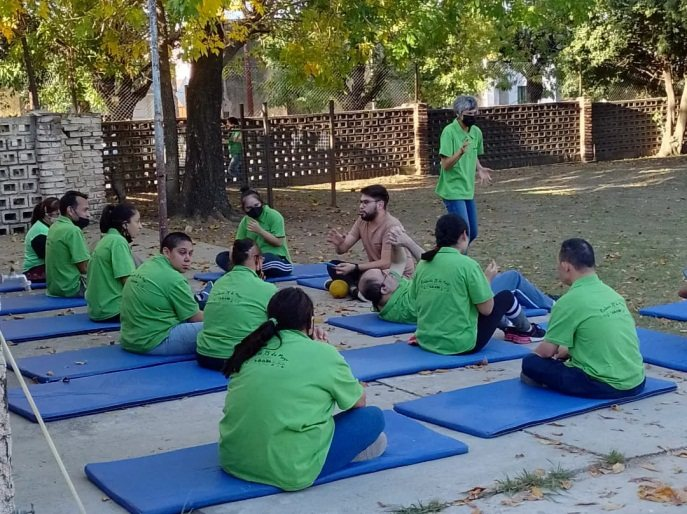
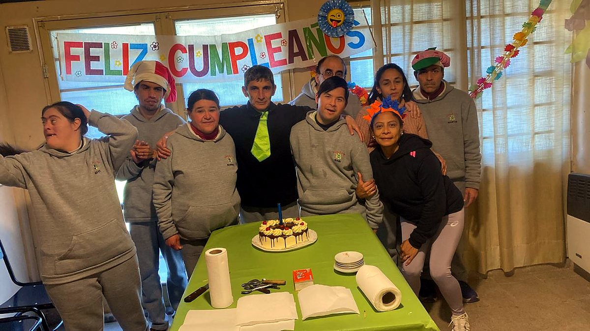

Oficio
Cocina
Cocinamos juntos: medir, amasar, hornear y compartir. Un taller que da autonomía para la vida diaria.
Cuándo: [días y horario]
Más información sobre cocina
Cargando…
Somos A.FA.DI.MA., familias y amigos de personas con discapacidad de Malagueño. Hace casi 20 años sostenemos un espacio gratuito para seguir aprendiendo después de la secundaria.

Nacimos de la preocupación de un grupo de vecinos de Malagueño: muchos jóvenes con discapacidad, al terminar la secundaria, se quedaban sin un lugar para seguir aprendiendo y compartiendo.
Así surgió la Fundación 25 de Mayo, A.FA.DI.MA.: la Asociación de Familiares y Amigos de personas con Discapacidad de Malagueño. Desde hace casi 20 años la sostienen grupos de padres con mucho esfuerzo, con un bono contribución anual, ferias americanas de ropa usada y ventas de pollos.
Las personas que vienen no tienen obra social y sus familias tienen pocos recursos, por eso no se les cobra nada. Sin la fundación, muchos quedarían encerrados en sus casas.

Favorecer el desarrollo integral de la persona con discapacidad y su integración familiar y social, elevando su calidad de vida.
Con talleres de capacitación y estimulación: un proceso de enseñanza y aprendizaje que contribuye a la inclusión.
Solidaridad, inclusión y compromiso de las familias.
Talleristas
Coordinan cocina, música, pintura, teatro, huerta y manualidades.
Talleres de capacitación y estimulación para seguir aprendiendo, compartir experiencias y desarrollar habilidades.
Oficio
Cocinamos juntos: medir, amasar, hornear y compartir. Un taller que da autonomía para la vida diaria.
Cuándo: [días y horario]
Más información sobre cocina
Naturaleza
Preparamos la tierra, sembramos y cuidamos lo que crece en el patio de la fundación.
Cuándo: [días y horario]
Conocé la huerta
Expresión
Pintamos, dibujamos y decoramos: el arte como forma de expresarse y de compartir.
Cuándo: [días y horario]
Conocé el taller de arte
Oficio
Con papel de revistas y diarios armamos canastos, adornos y flores: aprendemos a reutilizar y a crear con las manos.
Cuándo: [días y horario]
Conocé el taller
Expresión
Cantamos, actuamos y preparamos muestras para compartir con las familias y la comunidad.
Cuándo: [días y horario]
Conocé música y teatro
Movimiento
[Descripción del taller: ejercicios, juegos y relajación al aire libre.]
Cuándo: [días y horario]
Más información
Talleres, cumpleaños y festejos: así se vive la fundación.

No recibimos ningún subsidio del Estado. Todo lo sostienen las familias, los vecinos y quienes nos ayudan. Con tu aporte cubrimos:
[Testimonio real de una familia o un joven sobre la fundación.]
— [Nombre, vínculo]
¿Tu hijo o hija quiere participar? ¿Querés ayudar o visitarnos? Escribinos y te respondemos.
Dirección: M.N. de Ferreyra 239, Malagueño, Córdoba
Teléfono: (0351) 498-3479
WhatsApp: 351 590-1524
Email: a.fa.di.ma@hotmail.com
Redes: Facebook e Instagram, Fundación Afadima
Horario: [días y horario de atención]